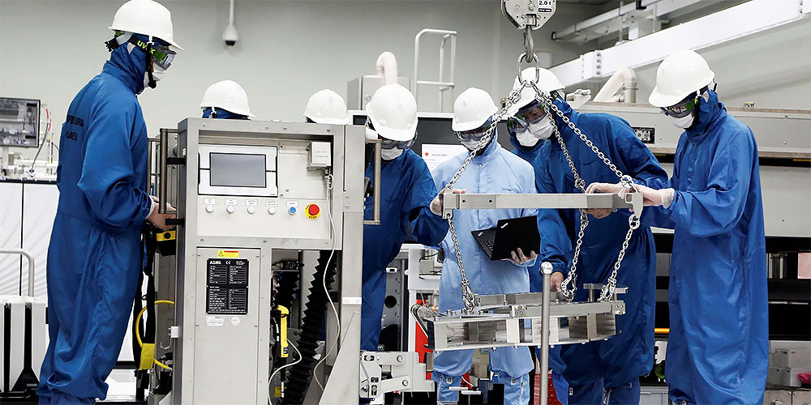

Corea del Sur da el primer aviso: está vaciando el stock de chips en un momento donde la producción cae tras un año sin parar de subir
Por un lado, la demanda de hardware para IA no para de subir, pero por el otro... Se escucha
tormenta. En un mismo sector, el de los semiconductores, todas las grandes empresas a nivel
mundial que se encargan del diseño o la fabricación, o ambas, apuntan a la Inteligencia
Artificial como el método para seguir aumentando sus ingresos, precisamente, porque se están
comprando los servicios generados con esas IA. Pero desde el otro lado de la orilla, y como
vimos con varios resultados financieros para este trimestre, parece que se está pidiendo
auxilio. Corea del Sur lanza el primer y preocupante aviso: su producción de chips cae tras un
año frenético, y al mismo tiempo, están vaciando el stock a un ritmo asombroso. ¿Qué demonios
está pasando?
Son dos caras de la misma moneda si entendemos a esa moneda como el sector de los
semiconductores en general. Por un lado, la IA y todo lo que se mueve con ella en
semiconductores, por el otro, el resto de sectores. Es la firmeza de una montaña y el fluir del
agua por un río, uno es sólido, el otro terminará en el mar, con suerte, si no se seca antes...
Corea del Sur da el primer susto y ve caer la producción de chips tras un año increíble
Es un frenazo que asusta. Desde Seúl llega la información clave que nos puede estar diciendo que las cosas no van tan bien como se nos está intentando vender con el sector de la IA, y que hay que cambiar el foco hacia el resto. Los datos de AMD son otro ejemplo perfecto, donde marcaron récord dentro de la Inteligencia Artificial con beneficios del +158%, mientras que el sector del gaming cae a un ritmo alarmante con un -69%, todo en un solo trimestre.
El problema es que desde Corea del Sur no están haciendo referencia a este Q3 de 2024, sino al hecho de que la producción de semiconductores ha caído interanualmente, es decir, de año a año. La cifra no es rimbombante: un -3%, bien, impresiona entre poco y nada, pero hay que tener en cuenta que el mes anterior aumentó un 11% en una tendencia claramente ascendente, y para colmo, los envíos bajaron un 0,7% reportado el día de ayer, cuando en agosto eran del 17%.
Esto solo indica que la producción se mantuvo mientras que los envíos comenzaron a descender, y ahora, ya en negativo, la producción se detuvo aproximadamente hace un par de semanas para enfrentar otro hecho: hay mucho stock disponible. Esto no debería ser un problema, pero por ciertos motivos, parece que lo está siendo.
El stock se está vaciando a un ritmo alarmante, pero la producción cae, ¿qué nos estamos perdiendo?
Los más listos estarán pensando en una subida del precio artificial argumentando que no hay stock y que se produce muy pocos chips, es una buena teoría sin duda. Pero no termina de cuadrar cuando sabemos que el nivel de inventario en las FAB de Corea del Sur, como en Samsung o SK Hynix está siendo eliminado a un ritmo diabólico: en un año han descendido un 41,5%.
O lo que es lo mismo, en 12 meses para diciembre, de forma interanual, el stock podría ser la mitad de lo que había en el mismo mes de 2023. Los datos de Samsung dan algunas pistas: en plena vorágine por las memorias HBM3e resulta que la compañía en su división de semiconductores no alcanzó las expectativas del mercado en ganancias.
La pregunta es, ¿qué esperaba entonces el mercado? Bueno, esperaba más ingresos, lógico, pero ¿por qué no se dieron? Pues porque según afirman analistas desde Seúl, el mercado se está enfriando a un ritmo que asusta.
Si AMD ha presentado sus nuevas CPU, si Intel ha hecho lo mismo, y en 2025 llegarán las GPU de NVIDIA y AMD, con Qualcomm en medio, ¿no es suficiente para impulsar la demanda? Pues no, no lo es. Lo que se está viendo con las últimas CPU (salvando los servidores que ya entran dentro de la IA como tal) es que los usuarios compran cada vez menos, tanto en PC como en portátiles.
El número de envíos se mantiene o sube, pero el de ventas está cayendo a un ritmo preocupante, no cuadra. Y hay que tener en cuenta que cada vez el consumo general está cayendo, impulsado por sectores como el de los coches, sean de combustión o eléctricos, y productos varios, como móviles, periféricos y otros.
Apple cancelando pedidos a TSMC, Qualcomm bajando precios tras apenas un mes, OpenAI volviendo a la tierra

Hay que tener en cuenta otro dato más: a principios de año Corea del Sur inyectó en sus empresas 19.000 millones para que produjesen más chips. Por lo tanto, en solo seis meses hemos pasado de la euforia y el dinero público para empresas privadas a rebosar, con Corea del Sur, EE.UU. y China a la cabeza, a que estas estén echando el freno y parando la producción de chips o las FAB. Aquí China es la única que sigue con el pie puesto en el acelerador, el resto o lo ha levantado por completo, o está a punta de gas, léase TSMC e Intel.
Hasta tal punto llega el problema que se dice que Apple ha cancelado 10 millones de chips con TSMC para ajustar la demanda. Por lo tanto, hay dos factores a tener en cuenta para las empresas: el usuario medio no tiene intención de gastar, sea porque no tiene, o porque los precios son una locura, y dos, la economía va cuesta abajo con países como Alemania, China o EE.UU. en recesión o bordeándola, aguantando a base de dinero público, ergo deuda e inflación futura.
En este contexto, AMD parece ser la más inteligente con su planteamiento de centrarse en los grandes mercados de ventas, aunque estén a la baja. De hecho, Qualcomm está ajustando precisamente precios porque apenas vende nada, y eso que tiene a Microsoft y Copilot+ en exclusiva. Resumiendo brevemente, vienen tiempos oscuros donde el usuario tecnológico, como llevamos diciendo mucho tiempo, está aguantando su hardware ante subidas de rendimiento menores y precios cada vez en más ascenso, donde ni las grandes potencias se libran del varapalo económico mundial.
Por ello, Corea del Sur está vaciando stock lo más rápidamente posible y bajando la producción, es la única manera de ajustar la oferta y la demanda sin que los precios caigan por debajo de los márgenes de beneficio, síntoma de que fuera de la IA está haciendo mucho frío, y que la inversión en esta podría verse perjudicada. No olvidemos que incluso OpenAI ha frenado su idea de fabricar sus propios chips, precisamente porque son conscientes de lo que viene.